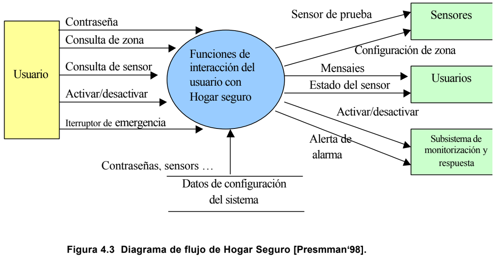
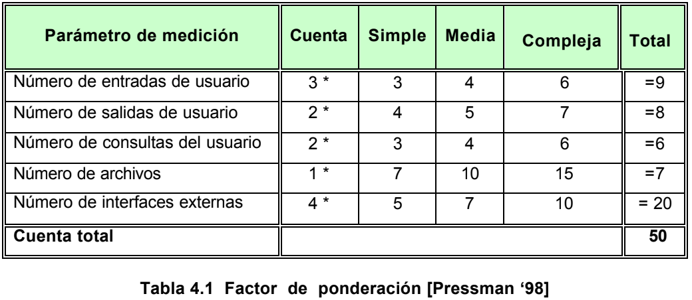

En esta fase se obtendrán los requisitos y se establecerá el fundamento para el diseño. Y es por eso que se desea una visión interna a la calidad del modelo de análisis.
Sin embargo hay pocas métricas de análisis y especificación, se sabe que es posible adaptar métricas obtenidas para la aplicación de un proyecto, en donde las métricas examinan
el modelo de análisis con el fin de predecir el tamaño del sistema resultante, en donde resulte probable que el tamaño y la complejidad del diseño estén directamente relacionadas.
Es por eso que se verán en las siguientes secciones las métricas orientadas a la función, la métrica bang y las métricas de la calidad de especificación.
La métrica de punto de función (PF) se puede usar como medio para predecir el tamaño de un sistema que se va a obtener de un modelo de análisis. Para instruir el empleo de la métrica PF, se considerará una sencilla
representación del modelo de análisis mostrada por Pressman, en donde se representa un diagrama de flujo de datos, de una función de una aplicación de software llamada Hogar Seguro. La función administra la interacción
con el usurario, aceptando una contraseña de usuario para activar/ desactivar el sistema y permitiendo consultas sobre el estado de las zonas de seguridad y varios censores de seguridad. La función muestra una serie de mensajes de
petición y envía señales apropiadas de control a varios componentes del sistema de seguridad.
El diagrama de flujo de datos se evalúa para determinar las medidas clave necesarias para el cálculo de al métrica de PF:
- número de entradas de usuario
- número de salidas de usuario
- número de consultas del usuario
- número de archivos
- número de interfaces externas

Hay tres entradas del usuario: contraseña, interruptor de emergencias y activar/desactivar aparecen en la figura con dos consultas: consulta de zona y consulta de sensor.
Se muestra un archivo (archivo de configuración del sistema).
También están presentes dos salidas de usuarios(mensajes y estado de del sensor) y cuatro interfaces externas (sensor de prueba, configuración de zona, activar/desactivar y alerta de alarma).

Puede emplearse para desarrollar una indicación del tamaño del software a implementar como consecuencia del modelo de análisis. Desarrollada por Tom DeMarco [Ejiogo ‘91], la métrica bang es “ una indicación, independiente de la
implementación, del tamaño del sistema” [Ejiogo ‘91]. Para calcular la métrica bang, el desarrollador de software debe evaluar primero un conjunto de primitivas (elementos del modelo de análisis que no se subdividen más en el nivel de análisis)
Las primitivas se determinan evaluando el modelo de análisis y desarrollando cuentas para los siguientes elementos:
Transformaciones (burbujas) que aparecen en el nivel inferior de un diagrama de flujo de datos.
Los atributos de un objeto de datos, los elementos de datos no compuestos y aparecen en el diccionario de datos.
Objetos de datos.
Las conexiones entre objetos de datos.
El número de transacciones de estado en el diagrama de transición de estado.
Además de las seis primitivas nombradas arriba, se determinan medidas adicionales para:
Funciones que caen fuera del límite del sistema y que deben modificarse para acomodarse al nuevo sistema.
Aquellos elementos de datos que se introducen en el sistema.
Aquellos elementos de datos que se sacan en el sistema.
Aquellos elementos de datos que son retenidos (almacenados) por el sistema.
Las muestras de datos (elementos de datos que no se subdividen dentro de una primitiva funcional) que existen en el l’imite de la i-ésima primitiva funcional (evaluada para cada primitiva).
Las relaciones que conectan el i-ésimo objeto en el modelo de datos con otros objetos.
Existe una lista de características para poder valorar la calidad del modelo de análisis y la correspondiente especificación de requisitos: Especificidad, corrección, compleción, comprensión, capacidad de verificación, consistencia externa e interna, capacidad de logro, concisión, traza habilidad, capacidad de modificación, exactitud y capacidad de reutilización. Aunque muchas de las características anteriores pueden ser de naturaleza cuantitativa, Davis [Pressman ‘98] sugiere que todas puedan representarse usando una o más métricas. Por ejemplo asumimos que hay ni requisitos en una especificación, tal como